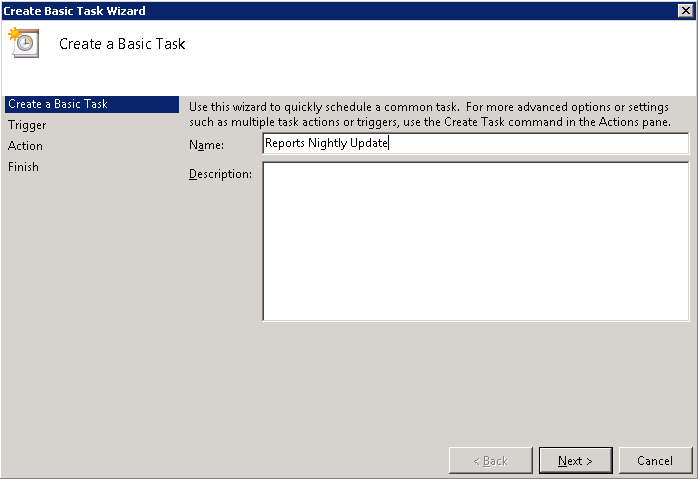
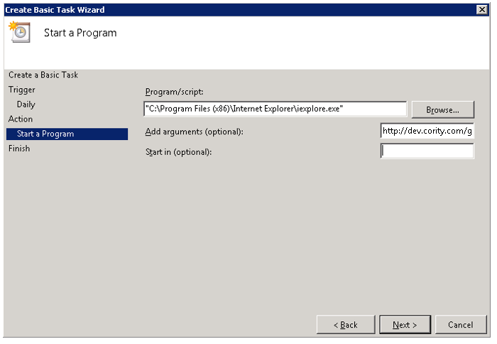
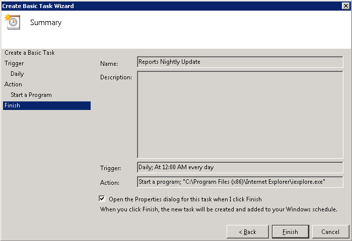
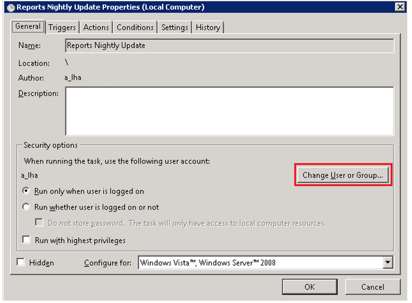
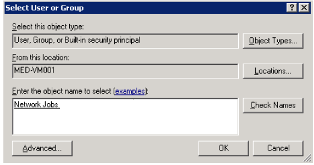
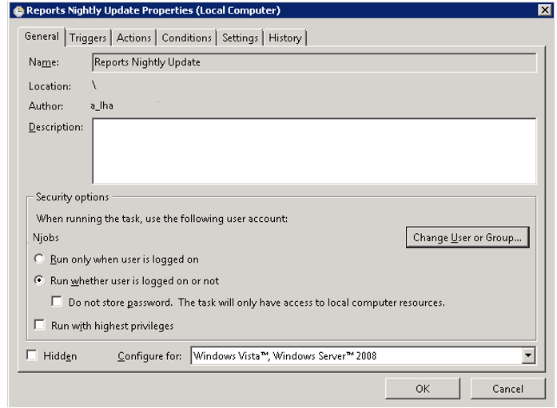

5.6 Configuring the Nightly Exposure Group Compliance Report The nightly Exposure Group Compliance report is similar to the regular Exposure Group Compliance report. The difference is that the former can be scheduled to run nightly, during off hours. This is useful when you want to run the report in a large corporation and the report will take a long time to generate.
To set up a scheduled task to generate the report nightly:
Select Start > Administrative Tools > Task Scheduler . On the Task Scheduler window, click Create Basic Task .
Name the task (for example, Reports Nightly Update), and then click Next .

Choose the update frequency you want, and then click Next .
Set the start date and time for when you want the task first performed, and then click Next .
For Action, select Start a program, and then click Next .
Click Browse and navigate to the Internet Explorer program (for example, C:\Program Files (x86)\Internet Explorer\iexplore.exe).You also need the report update URL for your Cority installation. Cority.com/pr" style="font-size: 11pt; color: #0000ff;">http://dev.Cority.com/pr then your report update URL is: Cority.com/pr/report/nightlyupdate.rails" style="font-size: 11pt; color: #0000ff;">http://dev.Cority.com/pr/report/nightlyupdate.rails
Enter the report update URL into the ‘Add arguments (optional)’ field.

Ensure that ‘Open the Properties dialog for this task when I click Finish’ is checked, and then click Finish .

Click Change User or Group , select the credentials you want the task to use, and then click OK .


Select Run whether user is logged on or not , and then click OK .

The nightly Exposure Group Compliance report will now update at the start time and then with the frequency you configured.